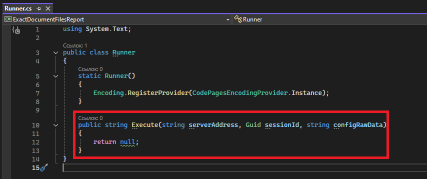

Основной метод. Сбор и возврат данных
Мы разработали все необходимые классы и их компоненты. Теперь мы можем вернуться к точке входа в библиотеку, заложенную в пункте Точка входа в библиотеку классов.
Сейчас основной метод просто возвращает значение null:

Если рассматривать код данного приложения с точки зрения чёрного ящика, то необходимо получить:
- Адрес сервера приложений
- Входной параметр serverAddress
- Пример значения: http://localhost:8076
- Уникальный глобальный идентификатор сессии с сервером приложений
- Входной параметр sessionId
- Пример значения: 901a4b51-e8d4-457d-9fb1-06e6c27dcb93
- Сериализованные настройки приложения
- Входной параметр configRawData
- Пример значения:
{
"object_ids": [2904, 2, 3],
"params":
{
"Глубина разузловки": 3,
"Название типа связи для отбора объектов": "Состоит из ...",
"Название типа связи для отбора документов": "Документы"
}
}
На выходе из приложения ожидается сериализованная строка в формате JSON примерно следующего наполнения:
[
{
"type": "Спецификация",
"product": "ПРМР.309001.001",
"name": "Спецификация",
"version": "1.0",
"fileName": "ПРМР.309001.001_Космический аппарат.spw",
"fileSize": "192 КБайт"
},
{
"type": "Спецификация",
"product": "ПРМР.309001.001",
"name": "Спецификация",
"version": "1.0",
"fileName": "ПРМР.309001.002_Панель в сборе.spw",
"fileSize": "171 КБайт"
},
{
"type": "Спецификация",
"product": "ПРМР.309001.001",
"name": "Спецификация",
"version": "1.0",
"fileName": "ПРМР.309001.003_Двойная аккумуляторная батарея.spw",
"fileSize": "169 КБайт"
}
]
В таком случае алгоритм основного метода приложения можно свести к следующей последовательности действий:
- Получить конфигурацию приложения через входной параметр configRawData
- Из конфигурации приложения получить идентификатор версии базового объекта
- Из конфигурации приложения получить значение параметра "Глубина разузловки"
- Из конфигурации приложения получить значение параметра "Название типа связи для отбора объектов"
- Из конфигурации приложения получить значение параметра "Название типа связи для отбора документов"
- Создать экземпляр класса для взаимодействия с Server API сервера приложений ЛОЦМАН:PLM через входные параметры serverAddress и sessionId
- Создать экземпляр класса для формирования данных отчёта
- Сформировать данные отчёта
- Преобразовать данные отчёта в строку с помощью сериализации в JSON и использованием глобальных настроек форматирования JSON
Полный код основного метода для сбора и возврата данных:
using ExactDocumentFilesReport;
using System.Text;
using System.Text.Json;
public class Runner
{
static Runner()
{
Encoding.RegisterProvider(CodePagesEncodingProvider.Instance);
}
public string Execute(string serverAddress, Guid sessionId, string configRawData)
{
var appConfiguration = AppConfiguration.Create(configRawData);
int mainObjectId = appConfiguration.GetMainObjectId();
int maxDepth = appConfiguration.GetMaxDepth();
string selectingObjectsLinkTypeName = appConfiguration.GetSelectingObjectsLinkTypeName();
string selectingDocumentsLinkTypeName = appConfiguration.GetSelectingDocumentsLinkTypeName();
var apiClient = new LoodsmanServerApiClient(serverAddress, sessionId);
var reportService = new ReportService(apiClient);
var reportRows = reportService.GenerateReportData(mainObjectId, maxDepth, selectingObjectsLinkTypeName, selectingDocumentsLinkTypeName);
return JsonSerializer.Serialize(reportRows, Global.JsonSerializerOptions);
}
}